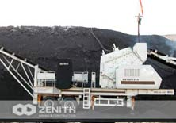
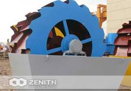

-
Raymond MillBest-selling products of the company
-
Sand Making Machine Best-selling products of the company
-
Vertical Roller MillBest-selling products of the company
hot produts
 E2015
E2015
ABOUT US----ZENITH
Recently, Bingo from ZENITH signed a large order
As developing countries, Africa has been one of the fastest growingeconomies in the world. It's well known that the infrastructure construction of Africa countries are not very well...
-
A2015
raymond mill
raymond mill for sale in France
-
B2015
quarry crusher
quarry crusher for sale in nigeria
-
C2015
vertical roller mill
phosphate rock vertical roller mills india
-
D2015
sand making machine
sand making machine for sale in south
Product index
-
Crushing Equipment
Zenith stone crushing equipment is designed to achieve maximum productivity and high reduction ratio. From large primary ... LEARN MORE ->
-
Grinding Equipment
Grinding is the required powdering or pulverizing process when final size of below 2 mm is needed. Zenith can provide the proper... LEARN MORE ->
-
Screening & Washing
Zenith screen can separate the stuff of different size range. It is the most general means of size control in aggregates ... LEARN MORE ->
-
Feeding & Conveying
Feeders are necessary when we need to deliver a mass flow of stone and minerals, especially in complete crushing ... LEARN MORE ->
-
Mobile Crushing Plant
The mobile crushing plant has the advantages of easy transportation, low transportation cost, flexible configuration ... LEARN MORE ->
-
Mining Equipment
Besides the ordinary crushing & grinding machines, mining equipments also include many very professional machines ... LEARN MORE ->
-
Complete Crushing Plant
Aggregate plant includes vibrating feeder, jaw crusher, impact crusher, vibrating screen, belt conveyor and centrally ... LEARN MORE ->
Latest Projects
-
 HP Series Cone Crusher
HP Series Cone Crusher
-
 YK Series Vibrating Screen
YK Series Vibrating Screen
-
 HJ Series Jaw Crusher
HJ Series Jaw Crusher
-
S Series Cone Crusher
-
 Sand Making Machine
Sand Making Machine
-
 Belt Conveyor
Belt Conveyor
-
GZD Series Vibrating Feeder
-
Vertical Roller Mill
-
Raymond Mill
-
Quarry Crusher
-

Portable Crusher
-

Sand Washing Machine
-
Tracked Mobile Jaw Crushing Plant
-
Mobile Impact Crushing Plant